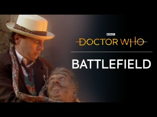

помощник
помощник
Субтитры: Русские и Английские | |
Субтитры: только Английские | |
с фанатским обновлением визуальных эффектов (cunningmunki) Субтитры: отсутствуют | |
Субтитры: Русские и Английские | |
Субтитры: отсутствуют |  |
Battlefield
Дата выхода: 6-27 сентября 1989
Формат: 4 эпизода по 25 мин.
| помощник | помощник |
Доктор и Эйс реагируют на сигнал бедствия и материализуются у озера Вортигерн в Англии, где ЮНИТ под командованием бригадира Уинифред Бамберы сопровождает ядерный конвой. В округе происходят необъяснимые явления, а из другого измерения прибывают рыцари во главе с Мордредом и его матерью — могущественной колдуньей Морганой. Все они узнают в Докторе Мерлина — и Повелителю Времени приходится играть роль, о которой он ещё ничего не знает. ЮНИТ вызывает из отставки бригадира Летбридж-Стюарта.
Открывает 26-й сезон — последний сезон классического «Доктора Кто». Сценарий Бена Аароновича, который позже напишет цикл романов «Реки Лондона». Идея о том, что Доктор — это Мерлин, появилась здесь впервые. Николас Кортни возвращается в роли Летбридж-Стюарта вместе со своей машиной Бесси. Во время съёмок Софи Олред едва не погибла из-за неисправности спецэффектов — Маккой заметил опасность и вытащил её из воды.
VHS - март 1988 | DVD - 29 декабря 2008 |  Blu-ray - 27 января 2020 * Версия в нашей группе |
|---|